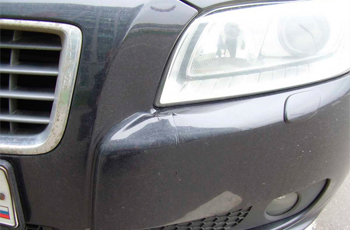

Мы — Профессионалы высочайшего класса
Мы используем самые качественные материалы и работы осуществляются теми, кто являются профессионалами высочайшего класса.

Нам под силу виртуозное выполнение такого сложного автотехнического процесса, как антикоррозийная обработка автомобиля! Многие владельцы современных машин считают, что коррозия им не страшна, но это не так.
Автомобиль современного делового человека должен иметь презентабельный вид. Многие наши клиенты, бросив критический взгляд на свою машину, понимают, что ей необходима абразивная полировка кузова. Она применяется в тех случаях, когда на поверхности автомобиля изобилуют дефекты.

Одной из самых востребованных нашими клиентами услуг является локальный ремонт бамперов прочего пластика. В наши дни, как и ранее, бамперы защищают автомобили в ходе столкновения. Бампера современных автомобилей изготовлены из пластика, стоят дорого и являются достаточно ломкими.
Наши специалисты способны привести в идеальное состояние приобретенный подержанный автомобиль либо машину, которая недавно побывала в «автопеределке».
Для владельцев автомашин марки Mercedes, BMW, Mini, Ford, Volkswagen, Mazda, Hyundai, нуждающихся в том, чтобы осуществить кузовной ремонт на самом высоком уровне либо покраску автомобиля, гостеприимно распахивает свои двери сервис «Автохолл».
Порой, даже с очень внимательным и аккуратным водителем, имеющим большой стаж, случается серьезная авария, которая приводит автомобиль к серьезной деформации кузова. В этом случае нами могут быть выполнены стапельные работы.
Все виды работ по ремонту авто
При выполнении всех работ, будь то локальная покраска автомобиля или полировка кузова, полная покраска автомобиля или ремонт акпп, работники технического центра «Автохолл» ставят на первое место тандем «Качество и Скорость». Каждый из нас – от директора центра до рядового работника – является автолюбителем, и мы четко представляем себе, что для человека, привыкшего с помощью автомобиля ежедневно перемещаться по городу из пункта «А» в пункт «Б», наличие идеально функционирующего транспортного средства – вопрос № 1.
Желая нашим клиентам удачного пути, мы напоминаем им, что компания «Автохолл» не просто предлагает лучший кузовной ремонт Москвы, но и является своеобразным маяком для всех москвичей, который освещает путь водителей на самых сложных дорогах и гарантирует надежность, безопасность и комфорт!
Желая нашим клиентам удачного пути, мы напоминаем им, что компания «Автохолл» не просто предлагает лучший кузовной ремонт Москвы, но и является своеобразным маяком для всех москвичей, который освещает путь водителей на самых сложных дорогах и гарантирует надежность, безопасность и комфорт!